Code
library(tidyverse)
library(openintro)
library(ISLR2)Before beginning this lab, you may want to read or skip Section 2.3 in the textbook. That section includes lots of helpful commands to complete the exercises in this lab.
library(tidyverse)
library(openintro)
library(ISLR2)This exercise relates to the College dataset, which is included in the ISLR2 R-package. It contains a number of variables for 777 different universities and colleges in the US. The variables are
First, use the glimpse() and head() commands to see the variables and some sample values. How are these commands different? How are they the same?
glimpse(College)Rows: 777
Columns: 18
$ Private <fct> Yes, Yes, Yes, Yes, Yes, Yes, Yes, Yes, Yes, Yes, Yes, Yes…
$ Apps <dbl> 1660, 2186, 1428, 417, 193, 587, 353, 1899, 1038, 582, 173…
$ Accept <dbl> 1232, 1924, 1097, 349, 146, 479, 340, 1720, 839, 498, 1425…
$ Enroll <dbl> 721, 512, 336, 137, 55, 158, 103, 489, 227, 172, 472, 484,…
$ Top10perc <dbl> 23, 16, 22, 60, 16, 38, 17, 37, 30, 21, 37, 44, 38, 44, 23…
$ Top25perc <dbl> 52, 29, 50, 89, 44, 62, 45, 68, 63, 44, 75, 77, 64, 73, 46…
$ F.Undergrad <dbl> 2885, 2683, 1036, 510, 249, 678, 416, 1594, 973, 799, 1830…
$ P.Undergrad <dbl> 537, 1227, 99, 63, 869, 41, 230, 32, 306, 78, 110, 44, 638…
$ Outstate <dbl> 7440, 12280, 11250, 12960, 7560, 13500, 13290, 13868, 1559…
$ Room.Board <dbl> 3300, 6450, 3750, 5450, 4120, 3335, 5720, 4826, 4400, 3380…
$ Books <dbl> 450, 750, 400, 450, 800, 500, 500, 450, 300, 660, 500, 400…
$ Personal <dbl> 2200, 1500, 1165, 875, 1500, 675, 1500, 850, 500, 1800, 60…
$ PhD <dbl> 70, 29, 53, 92, 76, 67, 90, 89, 79, 40, 82, 73, 60, 79, 36…
$ Terminal <dbl> 78, 30, 66, 97, 72, 73, 93, 100, 84, 41, 88, 91, 84, 87, 6…
$ S.F.Ratio <dbl> 18.1, 12.2, 12.9, 7.7, 11.9, 9.4, 11.5, 13.7, 11.3, 11.5, …
$ perc.alumni <dbl> 12, 16, 30, 37, 2, 11, 26, 37, 23, 15, 31, 41, 21, 32, 26,…
$ Expend <dbl> 7041, 10527, 8735, 19016, 10922, 9727, 8861, 11487, 11644,…
$ Grad.Rate <dbl> 60, 56, 54, 59, 15, 55, 63, 73, 80, 52, 73, 76, 74, 68, 55…head(College) Private Apps Accept Enroll Top10perc Top25perc
Abilene Christian University Yes 1660 1232 721 23 52
Adelphi University Yes 2186 1924 512 16 29
Adrian College Yes 1428 1097 336 22 50
Agnes Scott College Yes 417 349 137 60 89
Alaska Pacific University Yes 193 146 55 16 44
Albertson College Yes 587 479 158 38 62
F.Undergrad P.Undergrad Outstate Room.Board Books
Abilene Christian University 2885 537 7440 3300 450
Adelphi University 2683 1227 12280 6450 750
Adrian College 1036 99 11250 3750 400
Agnes Scott College 510 63 12960 5450 450
Alaska Pacific University 249 869 7560 4120 800
Albertson College 678 41 13500 3335 500
Personal PhD Terminal S.F.Ratio perc.alumni Expend
Abilene Christian University 2200 70 78 18.1 12 7041
Adelphi University 1500 29 30 12.2 16 10527
Adrian College 1165 53 66 12.9 30 8735
Agnes Scott College 875 92 97 7.7 37 19016
Alaska Pacific University 1500 76 72 11.9 2 10922
Albertson College 675 67 73 9.4 11 9727
Grad.Rate
Abilene Christian University 60
Adelphi University 56
Adrian College 54
Agnes Scott College 59
Alaska Pacific University 15
Albertson College 55Next, use the summary() function to produce a numerical summary of the variables in the data set.
summary(College) Private Apps Accept Enroll Top10perc
No :212 Min. : 81 Min. : 72 Min. : 35 Min. : 1.00
Yes:565 1st Qu.: 776 1st Qu.: 604 1st Qu.: 242 1st Qu.:15.00
Median : 1558 Median : 1110 Median : 434 Median :23.00
Mean : 3002 Mean : 2019 Mean : 780 Mean :27.56
3rd Qu.: 3624 3rd Qu.: 2424 3rd Qu.: 902 3rd Qu.:35.00
Max. :48094 Max. :26330 Max. :6392 Max. :96.00
Top25perc F.Undergrad P.Undergrad Outstate
Min. : 9.0 Min. : 139 Min. : 1.0 Min. : 2340
1st Qu.: 41.0 1st Qu.: 992 1st Qu.: 95.0 1st Qu.: 7320
Median : 54.0 Median : 1707 Median : 353.0 Median : 9990
Mean : 55.8 Mean : 3700 Mean : 855.3 Mean :10441
3rd Qu.: 69.0 3rd Qu.: 4005 3rd Qu.: 967.0 3rd Qu.:12925
Max. :100.0 Max. :31643 Max. :21836.0 Max. :21700
Room.Board Books Personal PhD
Min. :1780 Min. : 96.0 Min. : 250 Min. : 8.00
1st Qu.:3597 1st Qu.: 470.0 1st Qu.: 850 1st Qu.: 62.00
Median :4200 Median : 500.0 Median :1200 Median : 75.00
Mean :4358 Mean : 549.4 Mean :1341 Mean : 72.66
3rd Qu.:5050 3rd Qu.: 600.0 3rd Qu.:1700 3rd Qu.: 85.00
Max. :8124 Max. :2340.0 Max. :6800 Max. :103.00
Terminal S.F.Ratio perc.alumni Expend
Min. : 24.0 Min. : 2.50 Min. : 0.00 Min. : 3186
1st Qu.: 71.0 1st Qu.:11.50 1st Qu.:13.00 1st Qu.: 6751
Median : 82.0 Median :13.60 Median :21.00 Median : 8377
Mean : 79.7 Mean :14.09 Mean :22.74 Mean : 9660
3rd Qu.: 92.0 3rd Qu.:16.50 3rd Qu.:31.00 3rd Qu.:10830
Max. :100.0 Max. :39.80 Max. :64.00 Max. :56233
Grad.Rate
Min. : 10.00
1st Qu.: 53.00
Median : 65.00
Mean : 65.46
3rd Qu.: 78.00
Max. :118.00 Use the pairs() function to produce a scatterplot matrix of the first ten columns or variables of the data. Recall that you can reference the first ten columns of a matrix A using A[,1:10]
pairs(College[, 1:10])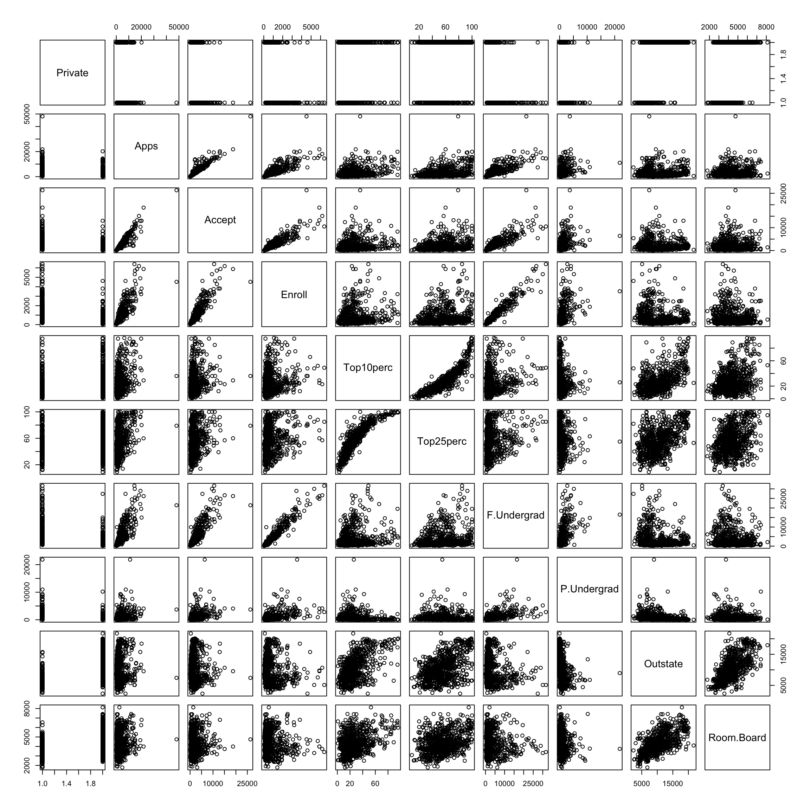
Produce side-by-side boxplots showing the distribution of numbers of students from out of state (Outstate) in both public and private institutions (Private).
There are two ways to complete this exercise:
plot() command as described on page 50.ggplot package (part of tidyverse) and the + geom_boxplot() layer. For more on ggplot see the visualization cheat sheet on Canvas.ex3 <- ggplot(College, aes(x = Private, y = Outstate)) +
geom_boxplot() +
ggtitle("ex3")
print(ex3)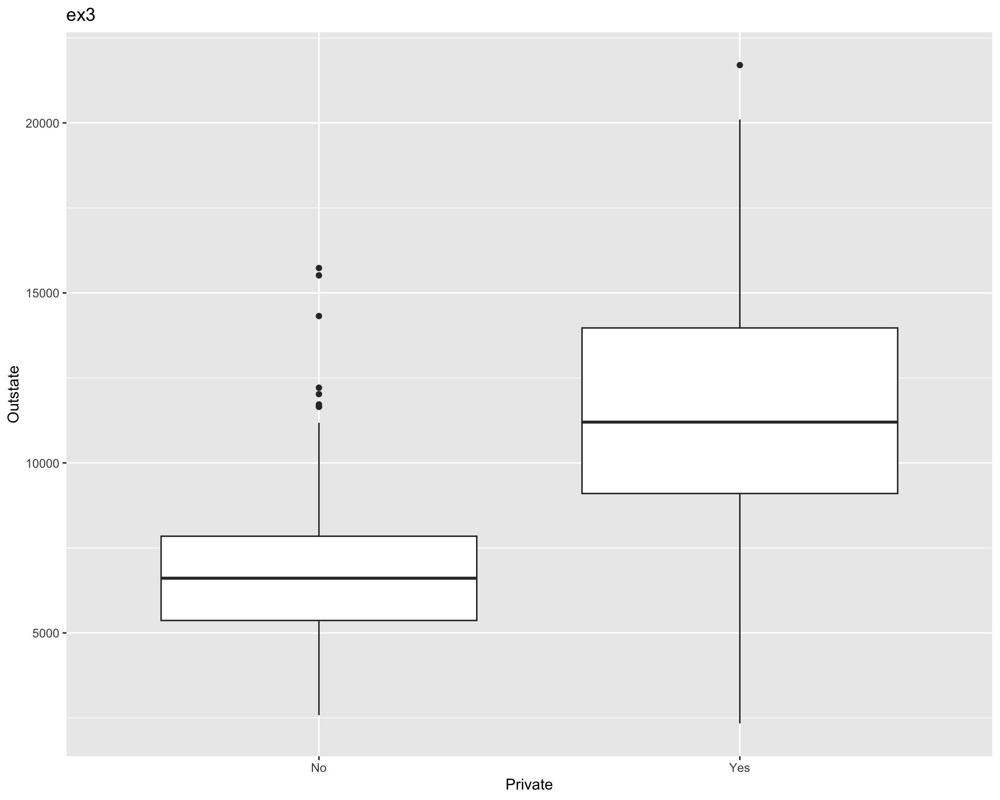
Create a new qualitative variable, call it Elite, by binning the Top10perc variable. We are going to divide universities into two groups based on whether or not the proportion of students coming from the top 10% of their high school classes exceeds 50%.
The command shown here uses the syntax of the tidyverse package.
elite_college <- College %>%
mutate(Elite = as_factor(ifelse(Top10perc > 50, "Yes", "No")))
head(elite_college) Private Apps Accept Enroll Top10perc Top25perc
Abilene Christian University Yes 1660 1232 721 23 52
Adelphi University Yes 2186 1924 512 16 29
Adrian College Yes 1428 1097 336 22 50
Agnes Scott College Yes 417 349 137 60 89
Alaska Pacific University Yes 193 146 55 16 44
Albertson College Yes 587 479 158 38 62
F.Undergrad P.Undergrad Outstate Room.Board Books
Abilene Christian University 2885 537 7440 3300 450
Adelphi University 2683 1227 12280 6450 750
Adrian College 1036 99 11250 3750 400
Agnes Scott College 510 63 12960 5450 450
Alaska Pacific University 249 869 7560 4120 800
Albertson College 678 41 13500 3335 500
Personal PhD Terminal S.F.Ratio perc.alumni Expend
Abilene Christian University 2200 70 78 18.1 12 7041
Adelphi University 1500 29 30 12.2 16 10527
Adrian College 1165 53 66 12.9 30 8735
Agnes Scott College 875 92 97 7.7 37 19016
Alaska Pacific University 1500 76 72 11.9 2 10922
Albertson College 675 67 73 9.4 11 9727
Grad.Rate Elite
Abilene Christian University 60 No
Adelphi University 56 No
Adrian College 54 No
Agnes Scott College 59 Yes
Alaska Pacific University 15 No
Albertson College 55 NoUse the summary() function to see how many Elite universities there are.
summary(elite_college) Private Apps Accept Enroll Top10perc
No :212 Min. : 81 Min. : 72 Min. : 35 Min. : 1.00
Yes:565 1st Qu.: 776 1st Qu.: 604 1st Qu.: 242 1st Qu.:15.00
Median : 1558 Median : 1110 Median : 434 Median :23.00
Mean : 3002 Mean : 2019 Mean : 780 Mean :27.56
3rd Qu.: 3624 3rd Qu.: 2424 3rd Qu.: 902 3rd Qu.:35.00
Max. :48094 Max. :26330 Max. :6392 Max. :96.00
Top25perc F.Undergrad P.Undergrad Outstate
Min. : 9.0 Min. : 139 Min. : 1.0 Min. : 2340
1st Qu.: 41.0 1st Qu.: 992 1st Qu.: 95.0 1st Qu.: 7320
Median : 54.0 Median : 1707 Median : 353.0 Median : 9990
Mean : 55.8 Mean : 3700 Mean : 855.3 Mean :10441
3rd Qu.: 69.0 3rd Qu.: 4005 3rd Qu.: 967.0 3rd Qu.:12925
Max. :100.0 Max. :31643 Max. :21836.0 Max. :21700
Room.Board Books Personal PhD
Min. :1780 Min. : 96.0 Min. : 250 Min. : 8.00
1st Qu.:3597 1st Qu.: 470.0 1st Qu.: 850 1st Qu.: 62.00
Median :4200 Median : 500.0 Median :1200 Median : 75.00
Mean :4358 Mean : 549.4 Mean :1341 Mean : 72.66
3rd Qu.:5050 3rd Qu.: 600.0 3rd Qu.:1700 3rd Qu.: 85.00
Max. :8124 Max. :2340.0 Max. :6800 Max. :103.00
Terminal S.F.Ratio perc.alumni Expend
Min. : 24.0 Min. : 2.50 Min. : 0.00 Min. : 3186
1st Qu.: 71.0 1st Qu.:11.50 1st Qu.:13.00 1st Qu.: 6751
Median : 82.0 Median :13.60 Median :21.00 Median : 8377
Mean : 79.7 Mean :14.09 Mean :22.74 Mean : 9660
3rd Qu.: 92.0 3rd Qu.:16.50 3rd Qu.:31.00 3rd Qu.:10830
Max. :100.0 Max. :39.80 Max. :64.00 Max. :56233
Grad.Rate Elite
Min. : 10.00 No :699
1st Qu.: 53.00 Yes: 78
Median : 65.00
Mean : 65.46
3rd Qu.: 78.00
Max. :118.00 Produce side-by-side boxplots of Outstate versus Elite. See Exercise 3 for suggestions on how to proceed.
ex4 <- ggplot(elite_college, aes(x = Private, y = Outstate)) +
geom_boxplot() +
ggtitle("ex3")
print(ex3)Choose at least two quantitative variables in the data set. For each one, produce at least three histograms with differing number of bins. (In total, you should have at least 6 histograms.)
There are two ways to complete this exercise:
hist() command as described on page 51.ggplot package (part of tidyverse) and the + geom_histogram() layer. For more on ggplot see the visualization cheat sheet on Canvas.outstate_hist_10 <- ggplot(College, aes(x = Outstate)) +
geom_histogram(bins = 10, fill = "#ff7eb6", color = "#000000") +
ggtitle("Outstate Tuition - 10 Bins") +
ggtitle("ex5")
outstate_hist_20 <- ggplot(College, aes(x = Outstate)) +
geom_histogram(bins = 20, fill = "#82cfff", color = "#000000") +
ggtitle("Outstate Tuition - 20 Bins") +
ggtitle("ex5")
outstate_hist_30 <- ggplot(College, aes(x = Outstate)) +
geom_histogram(bins = 30, fill = "#42be65", color = "#000000") +
ggtitle("Outstate Tuition - 30 Bins") +
ggtitle("ex5")
print(outstate_hist_10)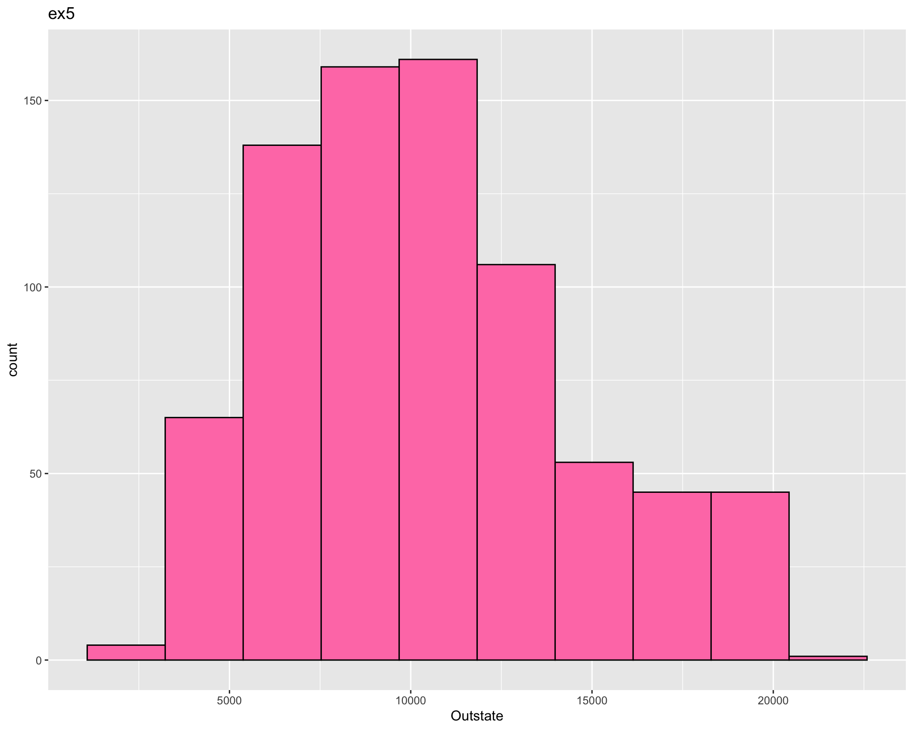
print(outstate_hist_20)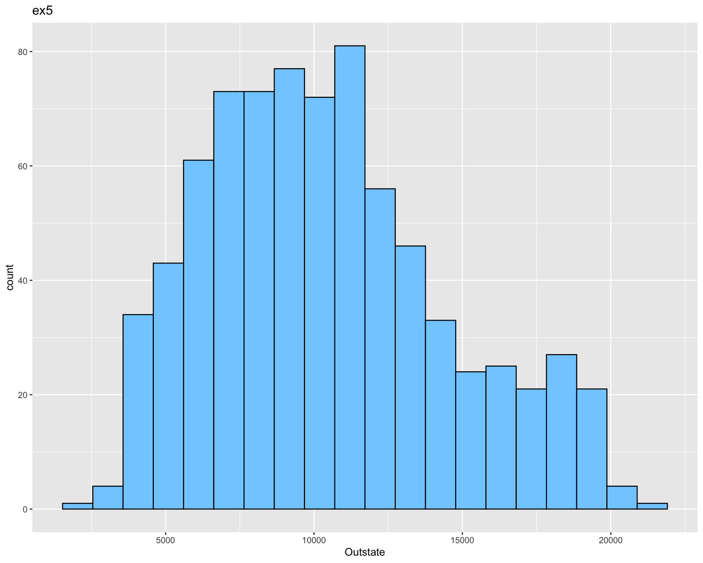
print(outstate_hist_30)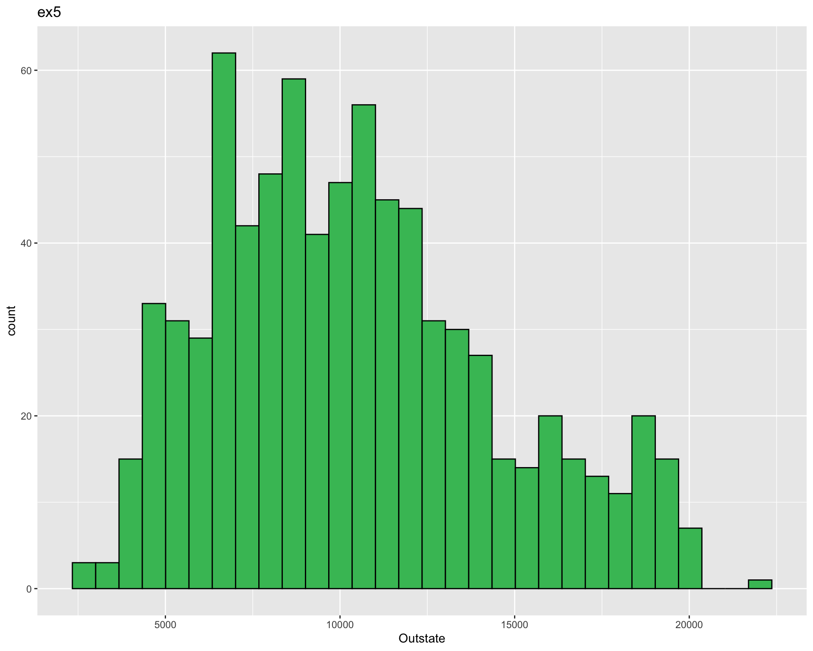
room_board_hist_10 <- ggplot(College, aes(x = Room.Board)) +
geom_histogram(bins = 10, fill = "#ff7eb6", color = "#000000") +
ggtitle("Room and Board Costs - 10 Bins") +
ggtitle("ex5")
room_board_hist_20 <- ggplot(College, aes(x = Room.Board)) +
geom_histogram(bins = 20, fill = "#82cfff", color = "#000000") +
ggtitle("Room and Board Costs - 20 Bins") +
ggtitle("ex5")
room_board_hist_30 <- ggplot(College, aes(x = Room.Board)) +
geom_histogram(bins = 30, fill = "#42be65", color = "#000000") +
ggtitle("Room and Board Costs - 30 Bins") +
ggtitle("ex5")
print(room_board_hist_10)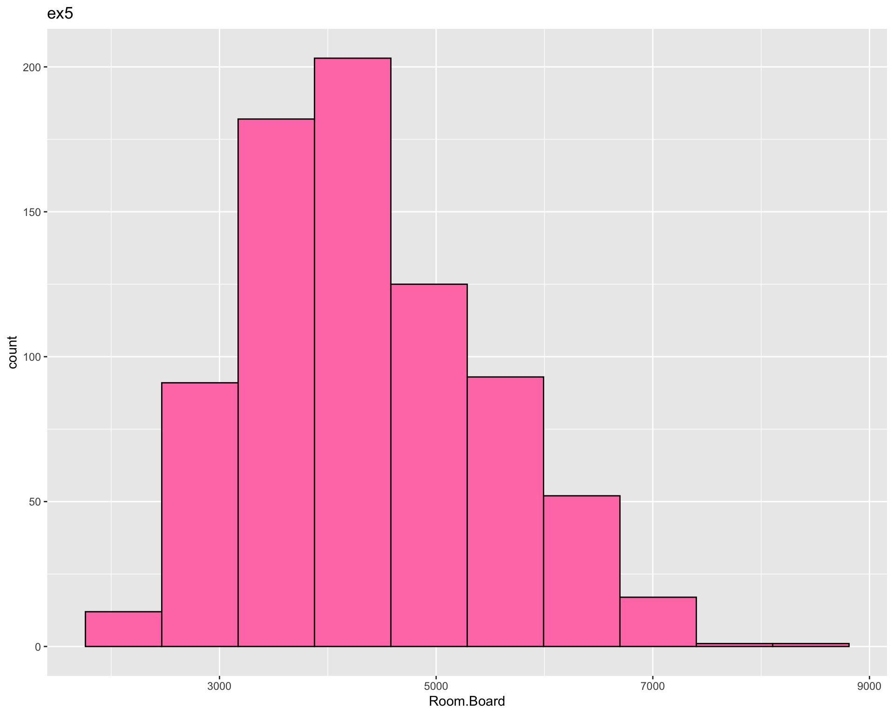
print(room_board_hist_20)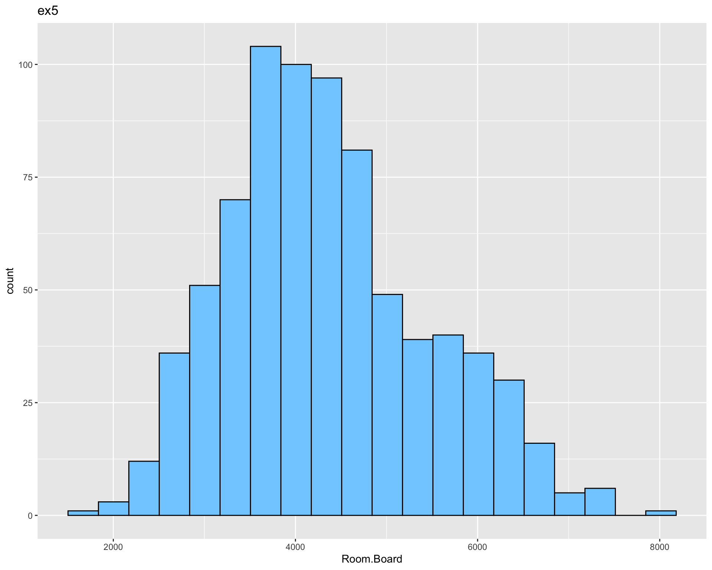
print(room_board_hist_30)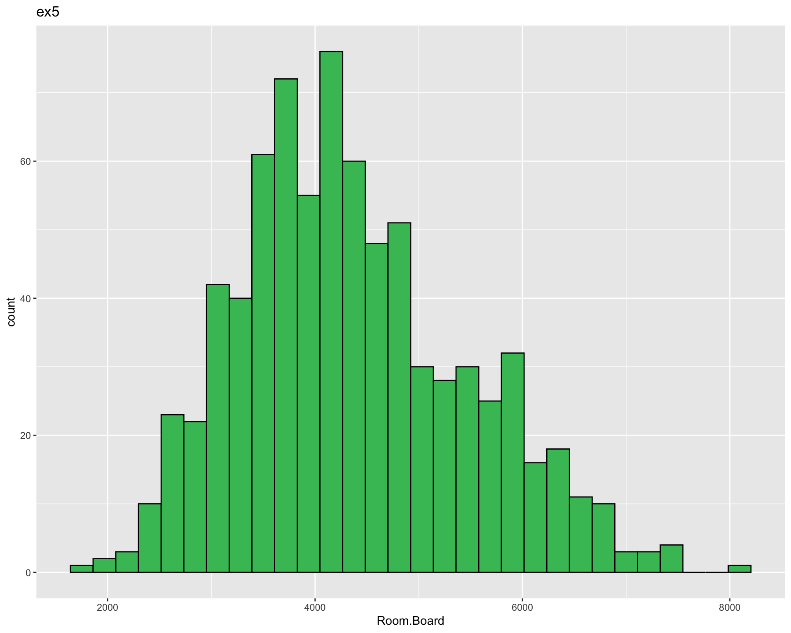
Using your scatterplot matrix from Exercise 2, determine which variable is the strongest predictor for the number of enrolled students (Enroll). Create a larger scatterplot showing this relationship and explain why what this means in the context of the data.
There are two ways to complete the plotting in this exercise:
plot() command as described on page 50.ggplot package (part of tidyverse) and the + geom_point() layer. For more on ggplot see the visualization cheat sheet on Canvas.library(ggplot2)
library(GGally)Registered S3 method overwritten by 'GGally':
method from
+.gg ggplot2
Attaching package: 'GGally'The following object is masked from 'package:openintro':
tipscollege_data <- College[, 1:10]
ex6 <- ggplot(college_data, aes_string(x = "Outstate", y = "Top10perc")) +
geom_point() +
geom_smooth(method = "lm", color = "#6929c4") +
labs(x = "Outstate", y = "Top10perc") +
theme_minimal() +
ggtitle("ex6")Warning: `aes_string()` was deprecated in ggplot2 3.0.0.
ℹ Please use tidy evaluation idioms with `aes()`.
ℹ See also `vignette("ggplot2-in-packages")` for more information.print(ex6)`geom_smooth()` using formula = 'y ~ x'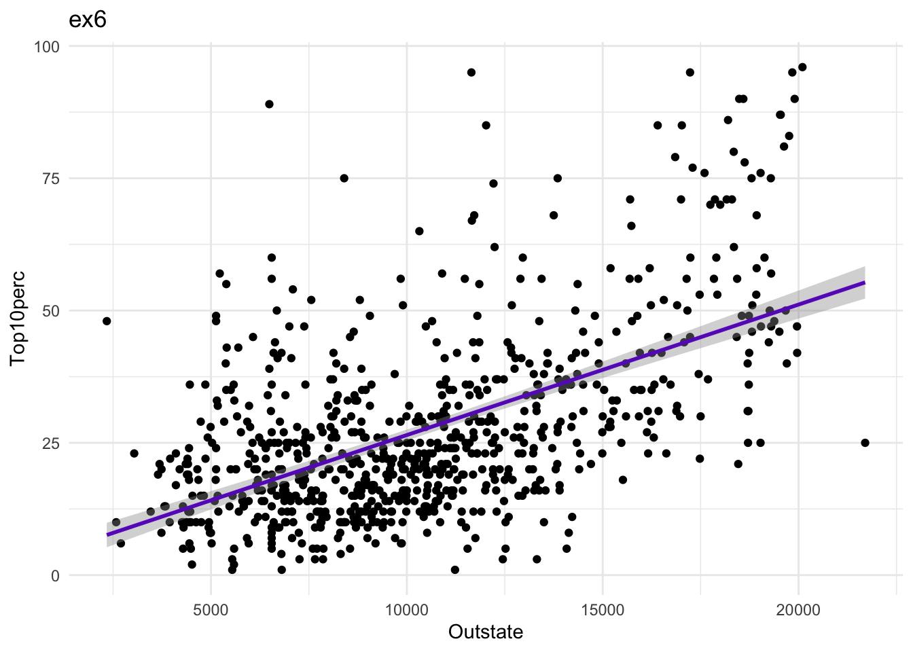
Examine another relationship between two variables that interest you, similar to what you did in Exercise 6.
ex7 <- ggplot(College, aes_string(x = "Outstate", y = "Grad.Rate")) +
geom_point() +
geom_smooth(method = "lm", color = "#6929c4") +
labs(x = "Outstate", y = "Grad.Rate") +
theme_minimal() +
ggtitle("ex7")
print(ex7)`geom_smooth()` using formula = 'y ~ x'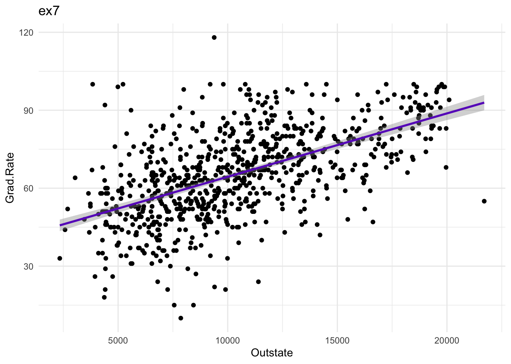
Continue exploring the data, and provide a brief summary of what you discover.
continue <- ggplot(College, aes_string(x = "Outstate", y = "Room.Board")) +
geom_point() +
geom_smooth(method = "lm", color = "#6929c4") +
labs(x = "Outstate", y = "Room.Board") +
theme_minimal() +
ggtitle("continue explore")
print(continue)`geom_smooth()` using formula = 'y ~ x'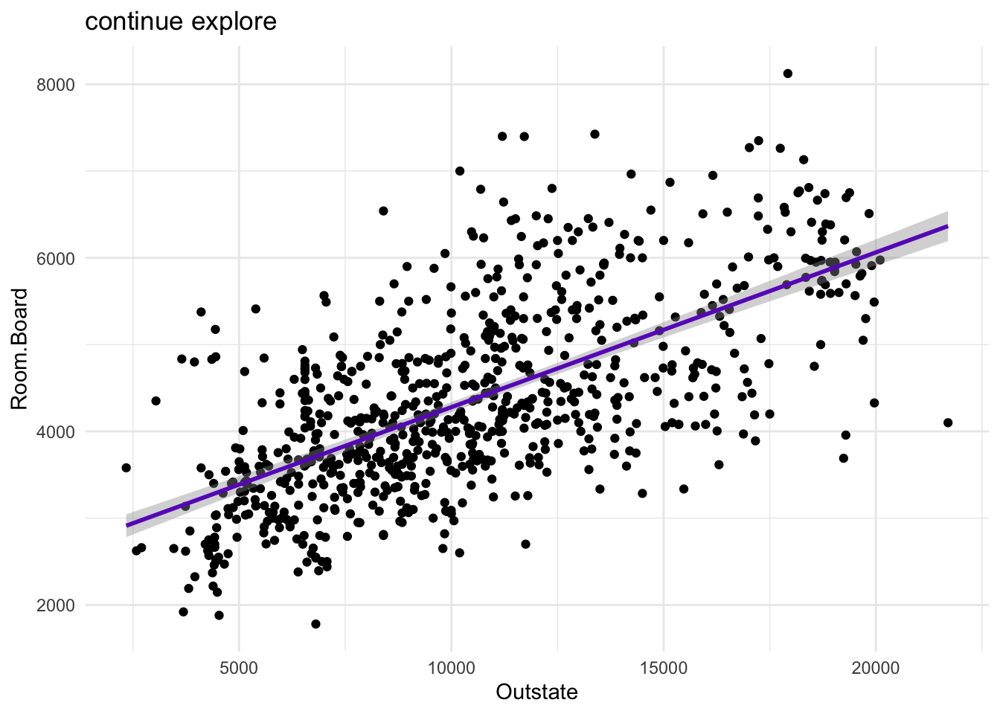